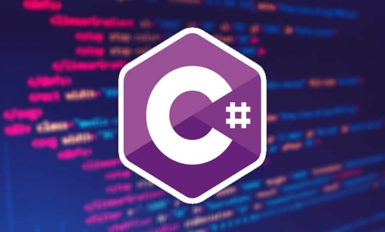

سی شارپ چیست؟
سی شارپ (c#) ریشه در زبان های خانواده C دارد و یک زبان برنامه نویسی شی گرا سطح بالا است. این زبان فوق العاده ، متن باز ، ساده ، مدرن ، انعطاف پذیر و چند منظوره است. ما میخواهیم در این مقاله یاد بگیریم که سی شارپ چیست؟ و چه کاری می تواند انجام دهد؟ و اینکه سی شارپ چه تفاوتی با سایر زبان های برنامه نویسی دارد.
در رشته کامپیوتر زبان برنامه نویسی به زبانی گفته می شود که برای نوشتن برنامه های نرم افزاری استفاده می شود که یکی از این زبان های قدرتمند سی شارپ است.
سی شارپ یک زبان برنامه نویسی است که توسط مایکروسافت در سال 2001 توسعه و راه اندازی شد و برای توسعه برنامه های وب ، دسک تاپ ، تلفن همراه ، بازی ها و موارد دیگر استفاده می شود.
سی شارپ یک زبان ساده ، مدرن و شی گرا است که به توسعه دهندگان انعطاف پذیری و ویژگی هایی را برای ساخت نرم افزار می دهد که نه تنها در دنیای امروز کاربرد دارد بلکه در آینده، بسیار پرکاربردتر می شود.
چرا باید سی شارپ را یاد بگیریم؟
یادگیری سی شارپ به درک تئوری های اساسی کامپیوتر کمک می کند و یک زبان برنامه نویسی سطح متوسط است. بنابراین ، درک آن آسان و کاربر پسند است. علاوه بر این ، سی شارپ حاوی کتابخانه کمتری است و زمان اجرای آن سریعتر است. بنابراین ، از آن به طور گسترده ای در برنامه نویسی Embedded استفاده می شود.
Embedded اصطلاحی است که به سیستم هایی متشکل از سخت افزار و نرم افزار اشاره دارد که برای اجرا نیازی به نرم افزار یا سخت افزارهای جانبی ندارد و کاملاً مستقل است و این در حالی است که به منظور انجام کار خاصی طراحی شده اند.
پیش نیازهای یادگیری زبان c#
برای یادگیری زبان سی شارپ ، داشتن دانش اولیه در کامپیوتر ، آشنایی با برنامه نویسی شی گرا و دانش اولیه مفاهیم زبان برنامه نویسی C برای درک آسان مبانی سی شارپ لازم است.
مشخصات اصلی زبان سی شارپ شامل موارد زیر است:
- منبع باز و سریع
- ساده و مدرن
- چند منظوره (چند سکویی)
- ایمن و کارآمد
منبع باز و سریع
سی شارپ در چارچوب .NET است که چندین زبان سطح بالا مقایسه می شود و مستقل از مایکروسافت اداره می شود. بیشتر کتابخانه ها ، کامپایلرها و ابزارهای مرتبط به پروژه های این زبانِ منبع باز در گیت هاب موجود هستند. در حالی که طراحی ویژگی های این زبان توسط مایکروسافت هدایت می شود ، جامعه توسعه دهندگان در زمینه پیشرفت این زبان بسیار فعال هستند.
ساده و مدرن
سی شارپ یک زبان برنامه نویسی ساده ، مدرن و شی گرا است. اگر به تاریخچه زبان های برنامه نویسی و ویژگی های آنها نگاه کنید ، هر زبان برنامه نویسی برای هدف خاصی طراحی شده است تا در آن زمان نیاز خاصی را برطرف کند.
هدف از سی شارپ توسعه یک زبان برنامه نویسی بود که نه تنها یادگیری آن آسان باشد بلکه از قابلیت های امروزی برای انواع توسعه نرم افزارها نیز پشتیبانی کند.
زبان سی شارپ برای حفظ نیازهای مشاغل و شرکت ها طراحی شده است. همینطور برای مشاغل طراحی شده است تا انواع نرم افزارها را با استفاده از یک زبان برنامه نویسی واحد بسازد.
این زبان عملکردی ساده و مدرن را برای پشتیبانی از توسعه نرم افزارها فراهم می کند. با سی شارپ میتوانید صفحات وب و انواع اپلیکیشن های موبایل و دسکتاپ طراحی کنید. برخی از ویژگی های کابردی زبان برنامه نویسی سی شارپ شامل مقداردهی اولیه و خودکار به انواع متغیرها و مجموعه ها ، عبارات لامبدا (lambda) ، برنامه نویسی پویا ، برنامه نویسی ناهمزمان (Asynchronous) ، تطبیق الگو ، اشکال زدایی پیشرفته و مدیریت استثناها است.
سینتکس های زبان سی شارپ ترکیبی از زبان های C ++ ، Java ، Pascal و چند زبان دیگر است که به راحتی قابل درک و یادگیری است. همچنین این زبان قدرتمند از پیچیدگی و ویژگی های بدون ساختار جلوگیری می کند.
چند منظوره (چند سکویی)
سی شارپ زبانی کراس پلتفرم یا چند سکویی است به این معنا که شما یک برنامه در چاچوب دات نت (.NET) ایجاد میکنید و می توانید آن برنامه را در سیستم عامل های مختلف از جمله ویندوز، لینوکس ، مک و… به راحتی اجرا کنید. همچنین میتوانید بسیاری از برنامه ها و پروژه های تحت دات نت را در فضای ابری (Cloud) توسعه دهید.
ایمن و کارآمد
سی شارپ یک زبان از نوع امنیتی است که به توسعه دهندگان این اجازه را میدهد که کد امن بنویسند. در اینجا چند نمونه از برخی مفاهیم کلیدی در سی شارپ وجود دارد که به نوشتن کدی ایمن و کارآمد کمک می کند:
- تبدیل نوع (typeCasting) ناامن مجاز نیست.
- پشتیبانی از nullable و non-nullable در مقداردهی متغیرها.
- هرگز یک ساختار را به عنوان یک پارامتر تصویب نمی کند ، مگر اینکه با صفت فقط خوانده شود (ReadOnly) علامت گذاری شده باشد زیرا ممکن است بر عملکرد برنامه تأثیر منفی بگذارد و منجر به یک ارور مبهم شود.
زبانی همه کاره
در حالی که اکثر زبان های برنامه نویسی برای یک هدف خاص طراحی شده بودند ، سی شارپ برای این منظور طراحی شده بود که همه کاربردها را داشته باشد و به یک زبانِ همه کاره تبدیل شود. ما میتوانیم برای ساختن برنامه های مدرن امروزی از سی شارپ استفاده کنیم. همینطور می توان برای توسعه انواع برنامه ها از جمله برنامه های سرویس گیرنده ویندوز ، افزونه ها و کتابخانه ها ، خدمات و API ها ، برنامه های وب ، برنامه های تلفن همراه ، برنامه های ابری و بازی های ویدیویی استفاده کرد.
در اینجا لیستی از انواع برنامه هایی را برای شما اوردیم که می توانید با c# ایجاد کنید:
- سرویس ها و خدمات ویندوز
- برنامه های سرویس گیرنده ویندوز
- وب اپلیکیشن ها
- افزونه ها و کتابخانه ها
- وب سرویس ها و وب API ها
- برنامه های اندروید و ای او اس
- پایگاه داده با استفاده از ابزار ML/Data
- سرویس های بک اند
- برنامه ها و سرویس های ابری Azure
- هوش مصنوعی
- بلاکچین و تکنولوژی های پیشرفته از جمله ارزهای رمزنگاری شده
- دستگاه های اینترنت اشیا (IOT)
- بازی های ویدیویی
- کنسول ها و سیستم های بازی
c# در حال تکامل
C# 9.0 آخرین نسخه آن است. اگر به تاریخچه این زبان نگاه کنید ، متوجه پیشرفت سریعتر آن از هر زبان دیگری می شوید. این زبان در ابتدا برای نوشتن برنامه های کلاینت ویندوز طراحی شده بود اما امروزه تقریباً از طریق برنامه های کنسول ، برنامه Cloud و نرم افزارهای مدرن یادگیری ماشین(ML.Net) یا هوش مصنوعی می تواند بر آید.
در جدول زیر نسخه های مختلف c# را با سال انتشار و ویژگی ها به طور خلاصه مشاهده می کنید:
| نسخه ها | سال انتشار | ویژگی های اضافه شده |
| 2.0 | 2005 | Generics, Anonymous Method, Partial Class, Nullable Type |
| 3.0 | 2008 | LINQ, Lambda Expression, Extension Method, Var type |
| 4.0 | 2010 | Named and Optional Parameters, Dynamic Binding |
| 5.0 | 2012 | برنامه نویسی ناهمزمان (Async Programming) |
| 6.0 | 2015 | کامپایلر به عنوان سرویس (Roslyn) ، بلوک های catch / finally ، مقادیر اولیه خودکار ، تنظیم کننده دیکشنری ، مقادیر پیش فرض برای get , property ، درون یابی رشته |
| 7.0 | 2017 | متغیرهای Out ، تطبیق الگو ، Deconstruction ، توابع محلی ، جداکننده های رقمی ، حروف دودویی ، انواع بازگشت async تعمیم یافته ، کانستراکتور ها ، اکسپرشن های get , set Throw ,همچنین می تواند به عنوان عبارت استفاده شود |
| 8.0 | 2019 | Nullable reference types, Async streams, ranges and indices, default implementation of interface members, recursive patterns, switch expressions, target-type new expressions |
| 9.0 | 2020 | Record Types , Init Only Setters, Improved Pattern Matching , Top-Level Statements , Fit and Finish |
خلاصه مطلب
در جمع بندی این مطلب میتوان گفت که این زبان برنامه نویسی بسیار قدرتمند و چندمنظوره است که تقریبا تمامی نیازهای یک برنامه نویس در پلتفرم های مختلف را فراهم می کند و ارزش این را دارد که برای یادگیری آن وقت و سرمایه خود را هزینه کنید. چرا که این زبان جزو زبان های پردرآمد سال 2021 است و در کشور خودمان ایران هم بازار کار مناسبی دارد که شما می توانید در شرکت های مختلف مشغول به کار بشوید و یا به صورت فریلنسر یا دورکاری با کارفرما در ارتباط باشید و پروژه های خودتان را انجام بدهید.